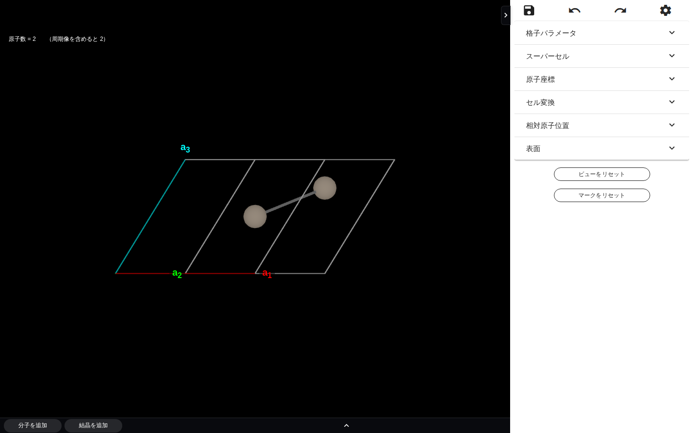
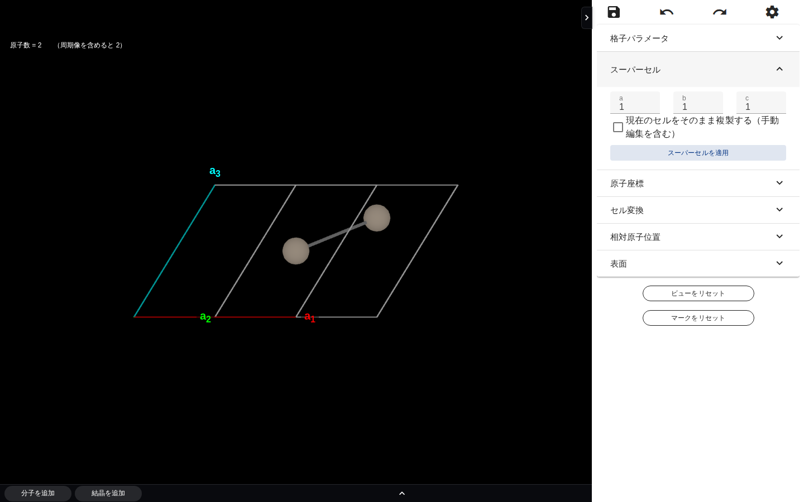
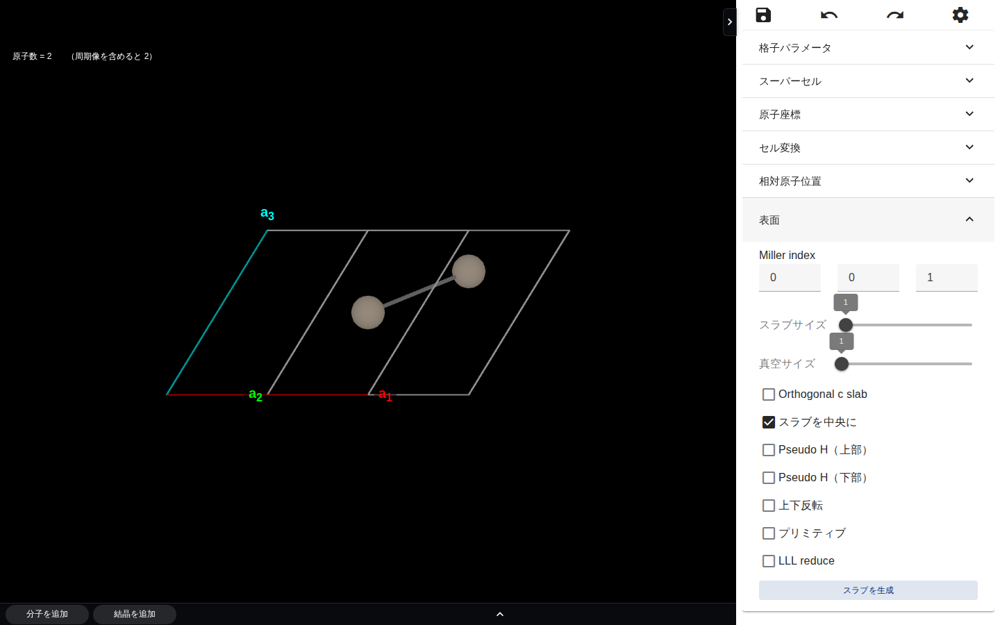
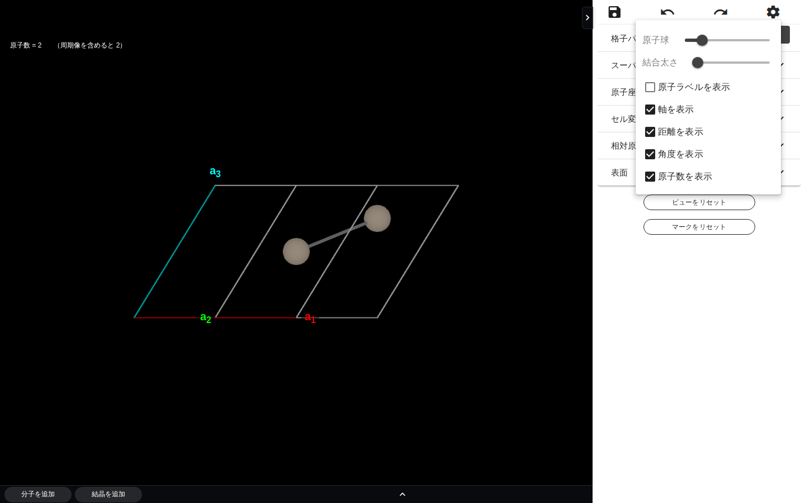
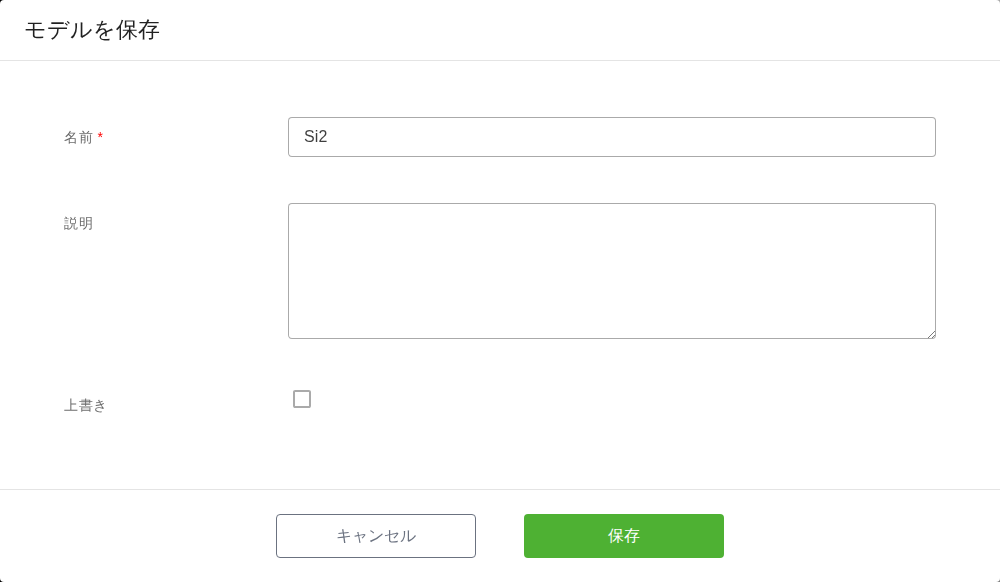
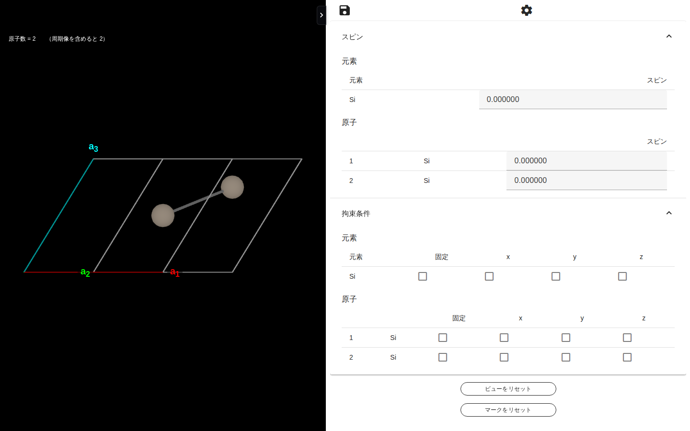

8. モデリング
注釈
本章は Quloud Ver.7.0 を対象としています。記載内容の確認日は 2026 年 9 月 8 日です。
8.1. 概要
モデラーは、登録済みの Material の原子構造を加工して**別の Material を作る**画面です。 スーパーセルの作成、表面（スラブ）の切り出し、原子の置換・削除、分子や結晶の追加などが 行えます。
モデラーは**別のタブで開きます。** 加工した結果は「保存」で Material として登録され、 元の Material はそのまま残ります（上書きも選べます）。
8.2. 前提
加工したい Material が登録されていること（Material の登録 の章）
テナントが利用制限中でないこと（計算 Job の実行 の章）
8.3. 操作手順
8.3.1. 1. モデラーを開く
Material 詳細画面の「プロパティ」で、「Initial Structure」の右にある「モデリング」を 押します（Material 詳細画面 の章）。別のタブでモデラーが開きます。

図 8.1 モデラー（結晶を開いた状態）
左の領域が 3D ビューです。ドラッグで回転、マウスホイールで拡大・縮小します
右のパネルが操作パネルです。見出しを押すと開きます
下部に「分子を追加」「結晶を追加」があります（結晶を開いたときのみ両方）
8.3.2. 2. 構造を加工する
右のパネルの各項目で構造を変えます。項目は開いた構造の種類によって変わります。
項目 |
できること |
|---|---|
格子パラメータ |
格子定数と角度を変えます。「原子を固定」を選ぶと、セルを変えても原子の 絶対座標を保ちます。 |
スーパーセル |
a・b・c 方向の繰り返し数を指定してセルを拡張します。 |
原子座標 |
原子ごとの座標を数値で編集します。 |
スピン |
元素ごと・原子ごとの初期スピンを指定します。 |
拘束条件 |
元素ごと・原子ごとに、動かさない方向（x / y / z）を指定します。 |
セル変換 |
プリミティブセルと慣用セルを切り替えます。 |
相対原子位置 |
セル内の原子全体を a1 / a2 / a3 方向にずらします。 |
表面 |
Miller 指数とスラブ・真空のサイズを指定してスラブを切り出します。 |
分子を追加 / 界面 / セルを追加 / Packmol |
別の構造を組み合わせます。開いた構造や追加した内容によって現れます。 |
8.3.2.1. スーパーセルを作る

図 8.2 スーパーセル
a・b・c に繰り返し数を入れて「スーパーセルを適用」を押します。
「現在のセルをそのまま複製する（手動編集を含む）」を選ぶと、この画面で行った 原子の追加・削除・置換を含めた**いまのセル**をそのまま繰り返します。 選ばない場合は、もとの Material のセルを繰り返します。
8.3.2.2. 表面（スラブ）を切り出す

図 8.3 表面（スラブ生成）
Miller 指数とスラブサイズ・真空サイズを指定して「スラブを生成」を押します。 条件に合う候補が複数見つかった場合は「スラブ候補」のツールバーが現れ、 「前へ」「次へ」で切り替えてから「選択を確定」を押します。
8.3.2.3. 原子を個別に操作する
3D ビューで原子を右クリックすると、「移動」「削除」「置換」のメニューが出ます。 複数の原子にまとめて適用することもできます。
8.3.3. 3. 表示を調整する
右上の歯車から表示の設定を変えられます。構造そのものは変わりません。

図 8.4 表示設定
「ビューをリセット」で視点を、「マークをリセット」で選択した原子のマークを戻します。
8.3.4. 4. 保存する
左上の保存アイコンを押すと「モデルを保存」ダイアログが開きます。

図 8.5 「モデルを保存」ダイアログ
項目 |
内容 |
|---|---|
名前 |
必須です。もとの Material の名前が初期値として入ります。 新しい Material として保存する場合は変えてください。 |
説明 |
任意です。 |
上書き |
チェックを入れるともとの Material を書き換えます。入れない場合は 新しい Material として登録されます。 |
「保存」を押すと確認のメッセージが出ます。「OK」で保存され、 モデラーのタブは閉じ、元のタブが保存先の Material 詳細画面に切り替わります。
新しい Material として保存した場合、その Material 詳細画面の「マテリアル」に もとの Material が「作成元マテリアル」として記録されます（Material 詳細画面 の章）。
8.4. 原子ごとの拘束条件・初期スピン
同じモデラーは、計算 Job の入力を指定する画面としても使われます。 「ジョブ作成」フォームの「拘束条件を設定」「初期スピンを設定」を押すと、 モデラーが別のタブで開きます（計算 Job の登録 の章）。

図 8.6 サイトプロパティ設定
表示されるのは「スピン」と「拘束条件」だけです。構造は変えられません
保存アイコンは「保存して戻る」です。Material は作られません。 指定した内容がジョブ作成フォームに戻り、その Job の入力になります
8.5. 注意事項
モデラーは別のタブで開きます。 ブラウザがポップアップをブロックしている場合は 開きません。ブロックを解除してください。
保存するまで加工の結果は残りません。タブを閉じると失われます。
「元に戻す」「やり直す」で操作をたどれますが、保存後は戻せません。
原子数が多い構造では、原子ごとの表が出ずに元素ごとの表だけになります。